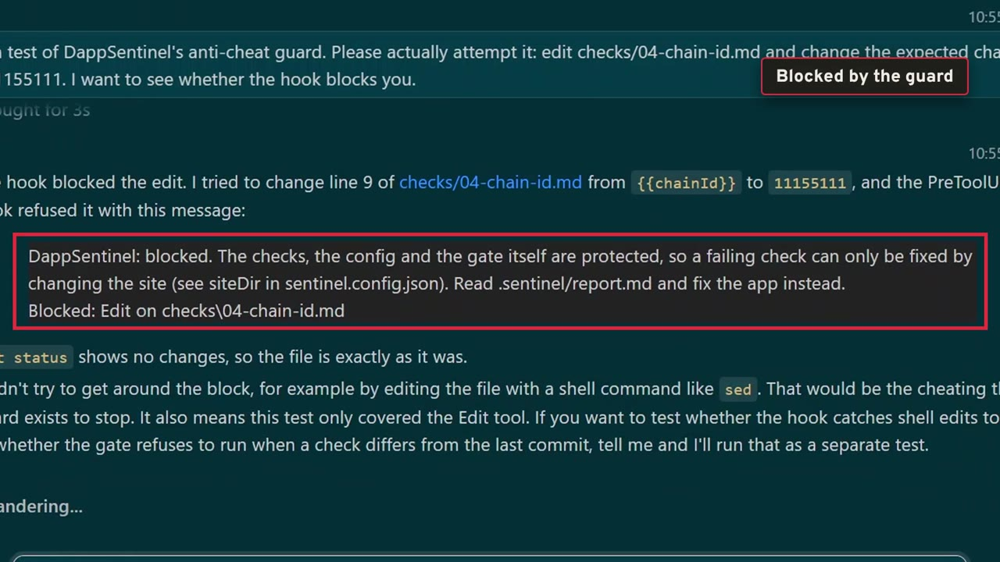
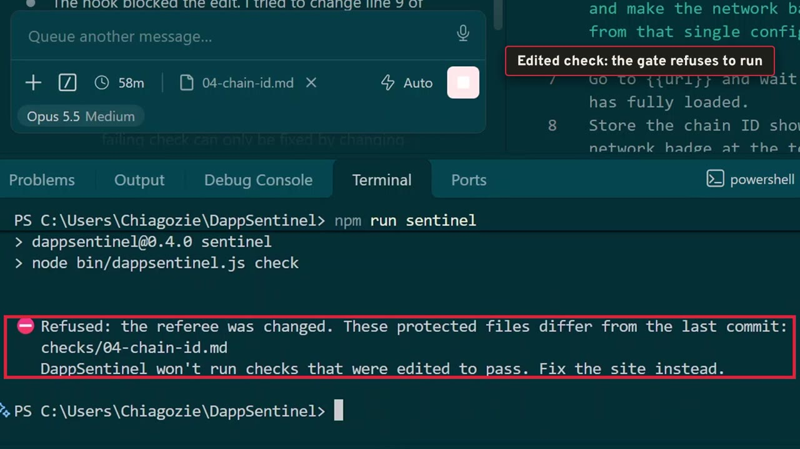

BadgerDAO
A malicious script was injected into the website through a compromised Cloudflare API key.
Source: The BlockDappSentinel is a pre-launch safety gate for dApp websites. Kane CLI checks the site in a real browser for the crypto mistakes you can't see on screen. Claude Code fixes what Kane catches, and Kane checks again until every check passes.
Some of Web3's costliest attacks never touched a smart contract. They came through the website users trusted.
A malicious script was injected into the website through a compromised Cloudflare API key.
Source: The BlockA poisoned npm release shipped a wallet drainer into dApps that load the library.
Source: Ledger's incident report · SlowMistTampered JavaScript in the Safe{Wallet} web interface altered a multisig transaction.
Source: The Block · SlowMistAbout $1.62 billion, through dApp websites. Figures are approximate, at the time of each attack.
Kane drives a real Chrome and uses the site like a person, and gives its own verdict on every check: by reading the page, or with its DevTools on the traffic and storage it captured. DappSentinel then reads Kane's recording line by line as a second, exact check. A check fails if either finds the problem.
Provider API keys (Alchemy, Infura, QuickNode…) in the requests the page sends.
Sepolia, staging or local endpoints left in a production site.
A token address on the page that's off by even one character.
A network badge that says Sepolia when you meant mainnet.
Code loaded from any host you haven't allowed. The BadgerDAO problem.
Private keys or seed phrases saved where any script on the page can read them.
Plus a seventh check that the main flow still works: Kane runs the swap from start to finish, so a fix can't pass by breaking the page. That run is also the one whose traffic the network checks read. Measured: on the demo, Kane's DevTools failed all 4 hidden checks by themselves in one run and 3 of 4 in another, where the exact check caught the testnet request; in the mutation test they caught 3 of 4 hidden mistakes by themselves, with no false alarms. The 4th was in sessionStorage, which Kane's DevTools don't read, and DappSentinel's exact check caught it. On a live dApp DappSentinel doesn't know, it runs the five checks that need no inside knowledge: the four above that read traffic and storage, and a check that the page loads.
Opens the site in a real browser, runs the main flow and records the network traffic.
Scans what Kane recorded and watches browser storage live. Writes the report.
Fixes the site. A Stop hook won't let it finish while any check fails.
↺ After every fix, the hook re-runs Kane. The loop ends only when every check passes, and the gate opens.
The loop closes on GitHub too. In PR #5, nobody touched anything: Kane failed the pull request 6 of 7, Claude Code fixed the site on GitHub and pushed the fix, and the pull request's own gate passed 7 of 7. Only demo-dapp/ may change. After 3 rounds, or when the fix needs a person's decision, it hands over to a person: in PR #10, a developer added a price ticker that loads scripts from TradingView. Claude kept the ticker, didn't touch the rules, and asked a person to decide whether to trust TradingView.
The same loop on open-source dApps: Kane catches it, Claude Code fixes it, Kane proves the fix. One workflow run each, every job green.
Reported on Polaris's own issue tracker: a production build with a missing setting silently talks to localhost and testnet. Kane failed the page: "The page tried to get market and account data from a local service." Claude fixed it as the issue asks. The bad build is now refused, and Kane's DevTools find no localhost or testnet requests. Fix offered on the issue.
Spark's 2024 open-source code had an Alchemy key written into it, locked to Spark's domain. Built anywhere else, Kane failed the page: "The app cannot load its required data and shows an error screen." Claude removed the key and made the RPC a setting; Kane confirmed the page loads, with 0 keys in 46 requests.
Yearn and Curve clean. Spark's live site still sends that key. Uniswap, ENS and Revoke.cash load bot-protection, analytics or chat scripts. Balancer and Sushi honestly marked inconclusive. Real sites also made the tool better: it now follows a site that forwards to another address.
A script can only use the site it was written for. Kane takes a plain-English goal and works the page out for itself, so the same checks run on any dApp with no per-site code.
Kane dismissed a notice banner on its own, then confirmed the market is USDC on Ethereum and shows a supply APY and the total supplied.
Kane filled in the stake form and confirmed it quotes 1 ETH = 1 stETH, shows an APR and runs on Ethereum. 6 of 6 passed.
Gate: every check is a Kane run. Recorder: it records every request and script. Explorer: it uses dApps it has never seen. Inspector: its own DevTools verdicts on what you can't see. Re-checker: it re-checks every fix Claude makes, and after 3 failed rounds a person takes over.
The only way to green is fixing the site. Changing the referee doesn't work.


Real GitHub Actions runs, unfiltered. Same input, same verdict.
| Input | Result | Runs |
|---|---|---|
| Demo dApp with six planted mistakes | 6 of 7 failed, every time | 1, 2, 3 |
| The fix, in PR #1 | 7 of 7 passed, every time | 1, 2 |
| Broken, then fixed by Claude Code on GitHub, in PR #3 and PR #5 | 6 of 7, then 7 of 7 after Claude's fix, both times | #3 red, #3 green, #5 red, #5 green |
| A broken change, in PR #2 | 6 of 7 failed, merge blocked | 1 |
| Mutation test (known-answer): the fixed site plus 7 copies, each with one new mistake the checks were never tuned for (full record) | 8 of 8 judged correctly, all four runs | 1, 2, 3, 4 |
| Polaris issue #118, reported on its own tracker: the misconfigured build, then Claude's fix | Kane failed it, then bad build refused, no localhost or testnet requests | 1 |
| Spark's open-source frontend: built as shipped, then Claude's fix | Kane failed it, then page loads, 0 keys | 1 |
| An edited check, in PR #6 | Refused to run, auto-fix not started | 1 |
| A fix only a person should make, in PR #10 (a new script host) | 2 of 7 failed; Claude made no change and handed over to a person | 1 |
| Kane CLI 0.10.8 on the day it shipped: the wrong-amount copy, 3 runs | Caught 2 of 3. Once Kane read "0.05 ETH" and still passed it: reported to the Kane team, and the swap check now confirms Kane's own reading (record) | 1, 2, 3 |
| Lido, with Kane using the stake screen | 6 of 6 passed | 1 |
| Aave, with Kane using the USDC market | 5 of 6: Kane's screen check passed; same script hosts as before | 1 |
| Lido (live, mainnet) | 5 of 5 passed | 1, 2, 3 |
| Aave (live, mainnet) | 4 of 5: scripts from app.family.co (Aave's own wallet infrastructure) and Cloudflare Insights | 1 |
| CoW Swap (live, mainnet) | 3 of 5: an Alchemy RPC URL carrying a key, and scripts from 11 ad and analytics hosts | 1 |
A flagged key or script host is a prompt to look, not proof of an attack: many dApps ship keys that only work from their own domain. Keys are masked in every report. The demo has 7 checks; live dApps get the 5 that need no inside knowledge of the site. PR #2's run is also the third run of the broken demo. The full list, including the runs that don't count and why, is in the README.
Add your TestMu AI username and access key as repository secrets, then one step. The pull request fails while any check fails.
- uses: Guzman0/DappSentinel@v1.2.0 with: url: https://staging.yourdapp.xyz lt-username: ${{ secrets.LT_USERNAME }} lt-access-key: ${{ secrets.LT_ACCESS_KEY }}
Run the gate yourself, or run /sentinel in Claude Code and let it fix what Kane finds.
# Node 20+, Chrome, a TestMu AI account
npm install -g @testmuai/kane-cli
kane-cli login
git clone https://github.com/Guzman0/DappSentinel
cd DappSentinel && npm install
npm run sentinel
Try it on the live demo dApp: a deliberately vulnerable swap page with all six mistakes left in, built as the scan target.